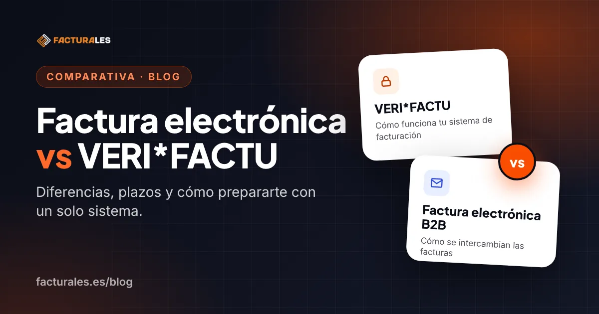

En España conviven (y a veces se confunden) dos grandes «olas» de cambios en facturación:
- VERI*FACTU / sistemas informáticos de facturación (SIF): enfoque de integridad y trazabilidad del software.
- Factura electrónica obligatoria B2B: enfoque de digitalización e intercambio entre empresas y profesionales, con estados y pagos.
Qué es VERI*FACTU (en una frase)
VERI*FACTU es una modalidad de los SIF en la que el sistema remite online a la Agencia Tributaria los registros de facturación. Tienes la guía completa en VERI*FACTU en 2027: guía para autónomos y pymes.
Plazos de adaptación del SIF (referencia práctica)
- 1 de enero de 2027: entidades que presenten el Impuesto sobre Sociedades.
- 1 de julio de 2027: resto de obligados.
Qué es la factura electrónica obligatoria B2B
La obligación B2B implica expedir, remitir y recibir factura electrónica entre empresarios y profesionales, y proporcionar información sobre estados. Su efectividad depende del desarrollo reglamentario: antes de actuar, comprueba en el BOE y en la Agencia Tributaria el estado actual de ese desarrollo.
Diferencias que importan: VERI*FACTU regula cómo funciona tu sistema (registro, trazabilidad, QR/URL). La factura electrónica B2B regula el intercambio electrónico y la interoperabilidad, además de estados y pagos.
Estrategia recomendada: un solo flujo
- Unifica datos (clientes, impuestos, series, vencimientos).
- Emite desde un sistema central (no desde tres sitios).
- Registra cambios (anulaciones y rectificativas) con orden.
- Prepara salidas: QR/URL y registro, y factura electrónica B2B cuando sea exigible.
- Conecta contabilidad: margen, IVA, tesorería, cobros y pagos.
Qué hace Facturales hoy
Hoy puedes descargar tus facturas en PDF y en formato Facturae 3.2.2 y enviarlas por email. Estamos preparando Facturales para VERI*FACTU y todavía no enviamos registros de facturación a la AEAT. Conoce las funciones de facturación en Crea y envía facturas.
Fuentes y normativa
- Real Decreto 1007/2023, de 5 de diciembre, por el que se aprueba el Reglamento que establece los requisitos que deben adoptar los sistemas y programas informáticos o electrónicos que soporten los procesos de facturación de empresarios y profesionales.
- Orden HAC/1177/2024, de 17 de octubre, que desarrolla las especificaciones técnicas, funcionales y de contenido de dicho Reglamento.
- Real Decreto-ley 15/2025, que aplaza los plazos de adaptación a VERI*FACTU a 1 de enero de 2027 (Impuesto sobre Sociedades) y 1 de julio de 2027 (resto de obligados).
- Ley 18/2022, de 28 de septiembre, de creación y crecimiento de empresas (Ley Crea y Crece), que establece la obligación de factura electrónica entre empresarios y profesionales.
- Real Decreto 1619/2012, de 30 de noviembre, por el que se aprueba el Reglamento por el que se regulan las obligaciones de facturación.
Este artículo es informativo y no sustituye al asesoramiento fiscal o legal. La normativa puede cambiar: consulta siempre las fuentes oficiales (BOE y Agencia Tributaria) y, si lo necesitas, a tu asesor.
Si quieres evitar rehacer procesos, elige una herramienta que centralice facturación y contabilidad.
Prueba Facturales durante 14 días y emite, numera y envía tus facturas desde un único sistema.